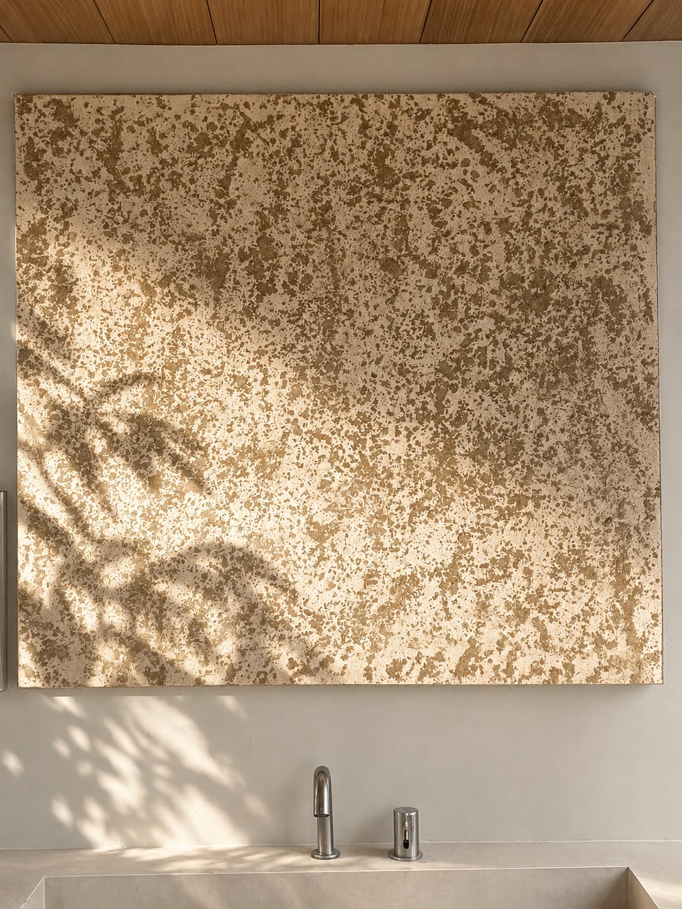
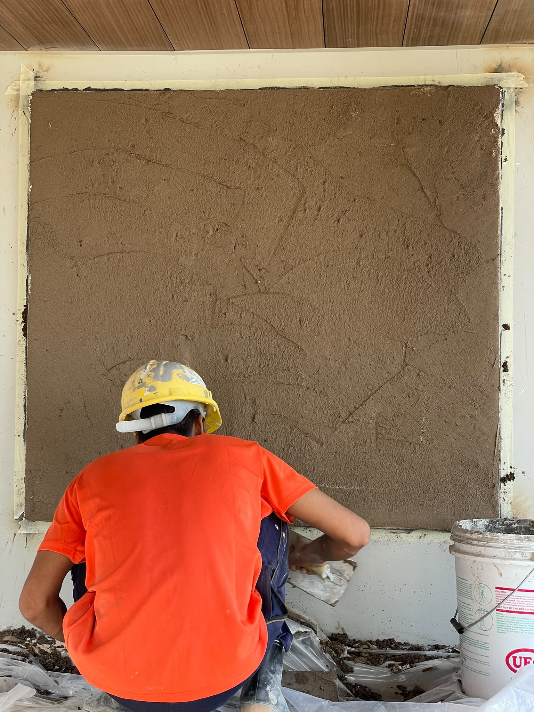
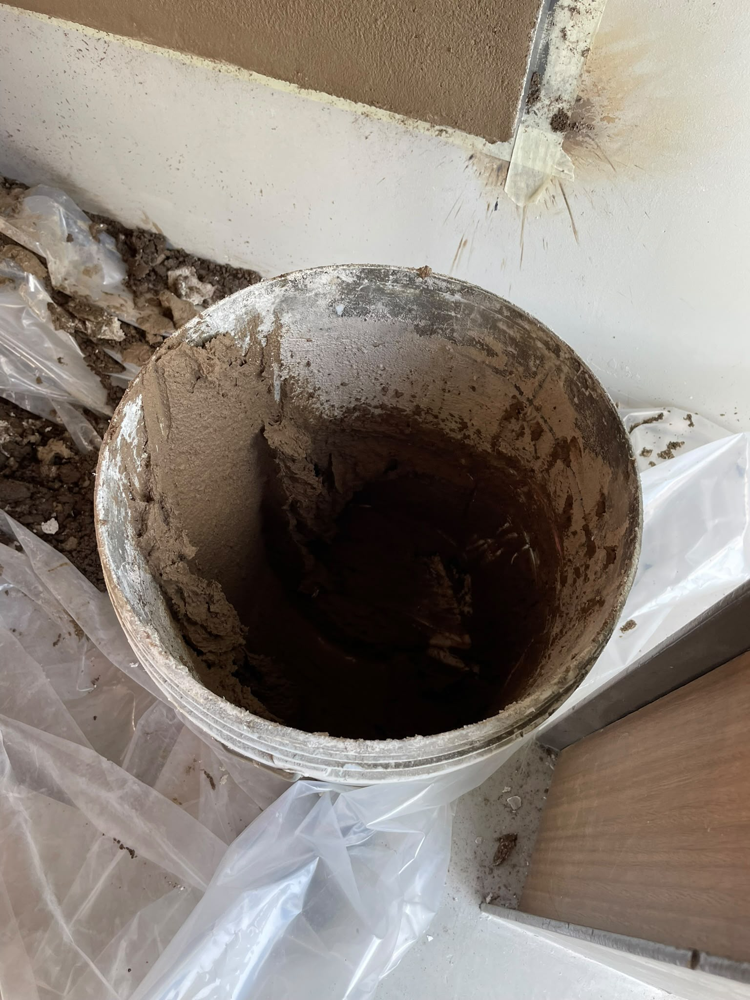
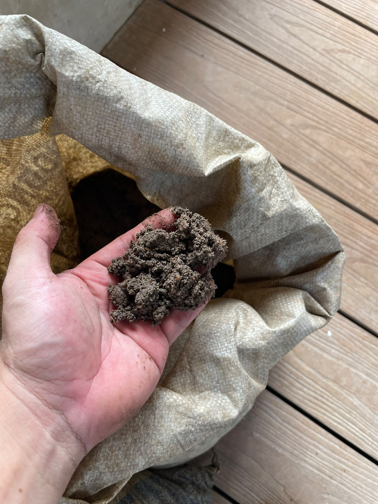
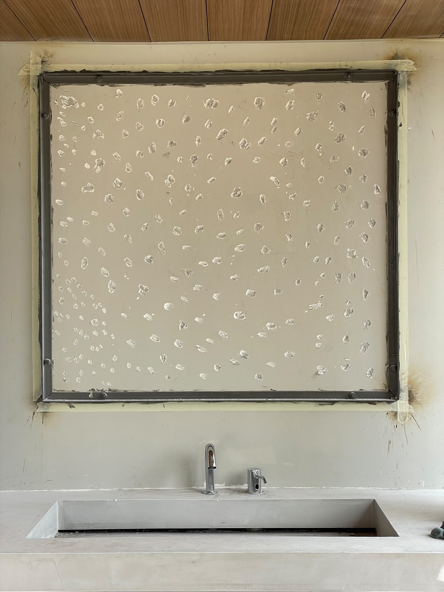

Painting Technosol
Category: Objects
A material study tracing the making of technosol through texture,
mix, and surface finish.

A surface experiment that follows the transformation of technosol from raw matter to finished panel. The sequence focuses on labour, material handling, and the quiet shifts in texture that happen during making.



